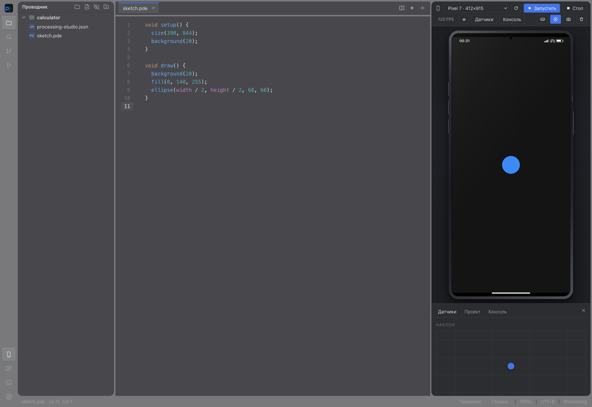
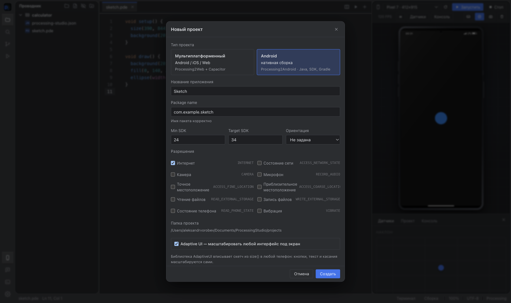

Do I need Processing for Android?
No. Processing Studio includes its own Java runtime PApplet in the generated project.
Processing Studio is a complete IDE for mobile apps built with Processing. Edit a sketch, run it beside your code, then export an Android project.
Get the IDE
A phone has touch, orientation, sensors and permissions. These are awkward to test in a regular Processing window. Here they are beside your code while the idea is still taking shape.
Create a .pde, use the familiar setup() and draw(). Multiple tabs work as one sketch.
Run your sketch in a phone model. Test touch, screen size, rotation and sensor readings.
Choose app settings. The IDE creates a Gradle structure, source files and assets for Android Studio.
Switch between iPhone, Pixel, Galaxy and iPad models or set your own size. Test portrait and landscape layouts, multitouch, the keyboard and touch indicators.
Accelerometer, gyroscope, compass, tilt, shake, orientation and location. Readings change while the sketch runs.

The wizard asks only for what you need to begin: name, package name, SDK versions, orientation and permissions.

AndroidManifest.xml, Gradle settings, MainActivity, assets and application source files.
The project includes its own Java runtime PApplet for drawing, touch, sensors and permissions.
Open the generated project in Android Studio, build it with Gradle and test it on a real device.
Alongside the emulator, you get the tools you need for everyday project work.
Syntax highlighting, Processing and Android API completion, smart indentation, find and replace. Errors point to a specific line.
File explorer, multiple tabs, split editor, project search, Git and change history. Tabs are restored after a restart.
Run configurations, multiple terminals and package.json scripts. Open Markdown, images and Jupyter notebooks.
Light and dark themes, JSON themes, font and interface scaling. macOS also offers a translucent window mode.
Processing Studio is based on the existing FrogeeCodeIDE editor. If you have used it before, the files, tabs, search, terminals and settings will feel familiar. Alongside them are tools for mobile development with Processing: PDE sketches, a phone emulator and Android project export.
Explore FrogeeCodeIDEWant to work with sketches in the familiar FrogeeCodeIDE? The Processing Mobile plugin adds PDE runs in an emulator, Android project export and APK builds. Install it from the Extensions section in FrogeeCodeIDE.
Browse extensions Plugin instructions
The gallery covers touch, the accelerometer, pinch zoom, permissions and adaptive layouts. Other examples show UDP communication with ESP32 and using PApplet inside an Activity.
No. Processing Studio includes its own Java runtime PApplet in the generated project.
The emulator runs a sketch quickly inside the IDE. Use Android Studio and Gradle to build the exported project and test it on a device.
Yes. The explorer works with project files, and the editor supports multiple tabs and split view.
Version 4.4.0. A free, open-source IDE under GPL 2.0.
These are desktop builds of the IDE. Choose a package for your computer.
| System | Processor | Package | Size | Download |
|---|---|---|---|---|
| macOS | Apple Silicon | DMG | 750 MB | Download |
| macOS | Intel | DMG | 753 MB | Download |
| Windows | x64 | EXE | 692 MB | Download |
| Linux | x64 | AppImage | 625 MB | Download |
| Linux | x64 | DEB | 622 MB | Download |
The IDE exports a project. The target platform tools perform the final build.
| Target | IDE export | Final build |
|---|---|---|
| Android | Gradle project | APK via Android Studio |
| iOS | Not yet | Not supported |